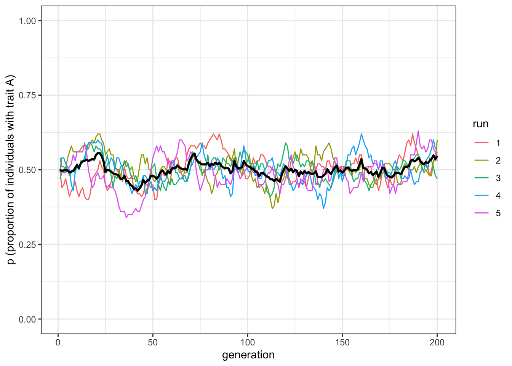
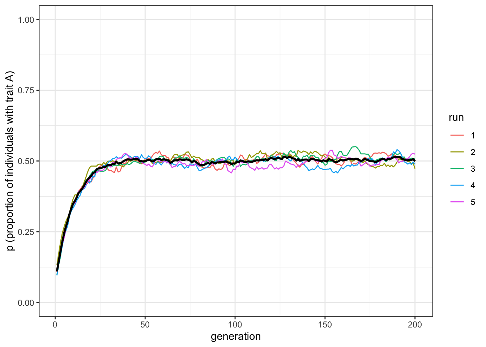
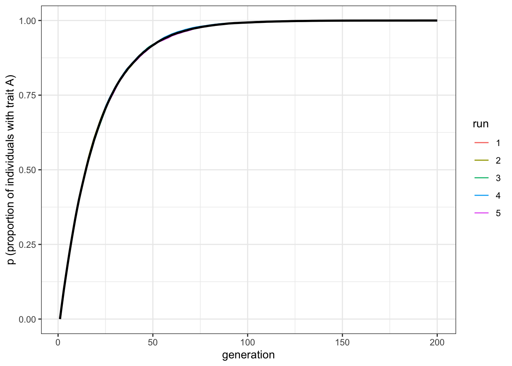
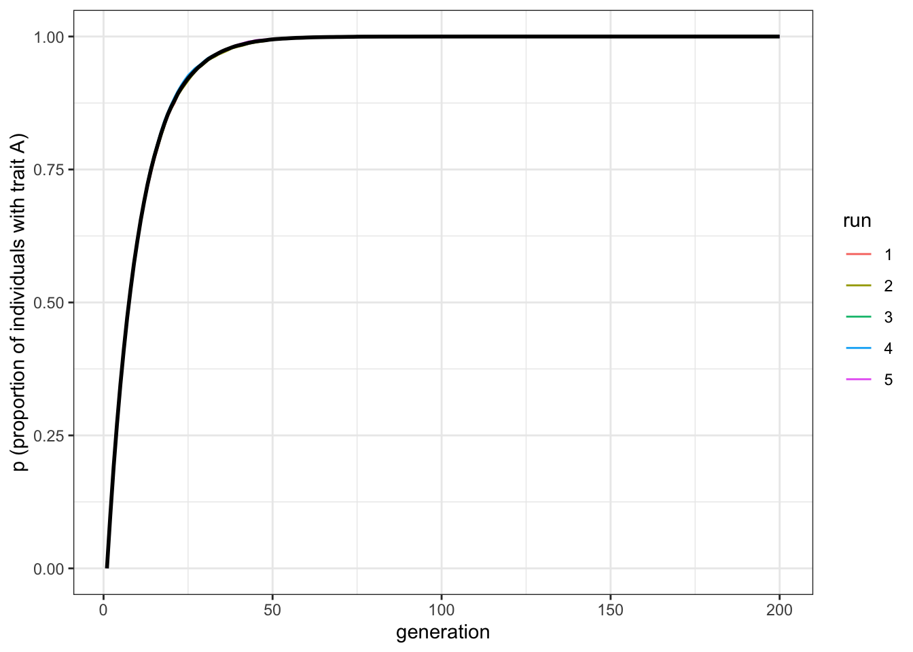
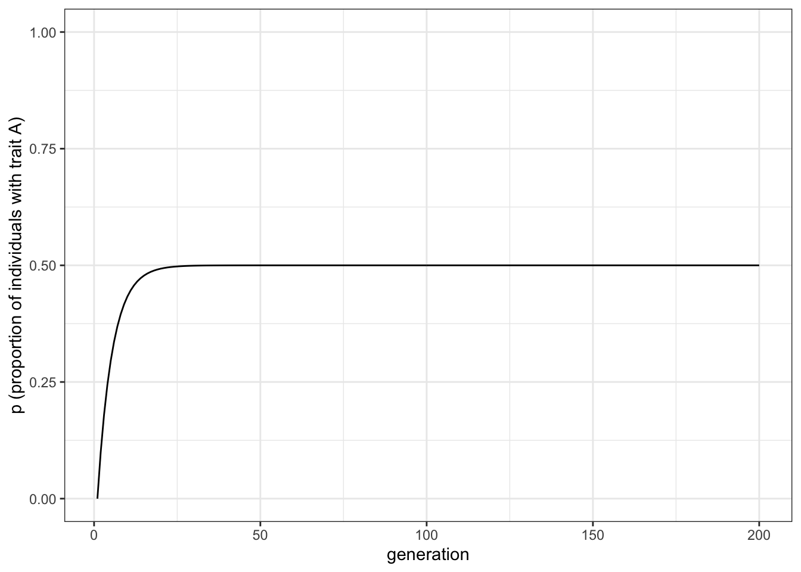
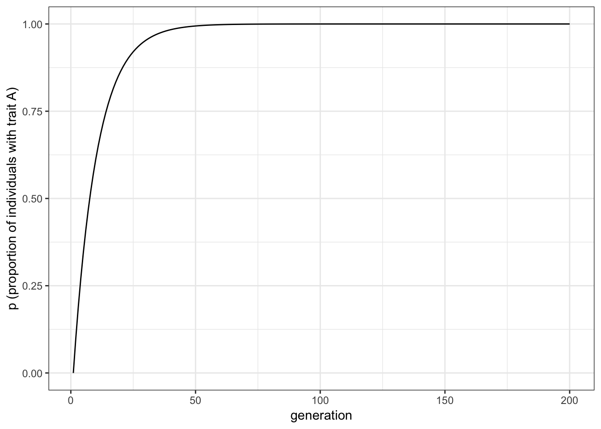

2 Unbiased and biased mutation
Evolution doesn’t work without a source of variation that introduces new variation upon which selection, drift and other processes can act. In genetic evolution, mutation is almost always blind with respect to function. Beneficial genetic mutations are no more likely to arise when they are needed than when they are not needed - in fact most genetic mutations are neutral or detrimental to an organism. Cultural evolution is more interesting, in that novel variation may sometimes be directed to solve specific problems, or systematically biased due to features of our cognition. In the models below we’ll simulate both unbiased and biased mutation.
2.1 Unbiased mutation
First we will simulate unbiased mutation in the same basic model as used in the previous chapter. We’ll remove unbiased transmission to see the effect of unbiased mutation alone.
As in the previous model, we assume \(N\) individuals each of whom possesses one of two non-overlapping cultural traits, denoted \(A\) and \(B\). In each generation, from \(t = 1\) to \(t = t_{\text{max}}\), the \(N\) individuals are replaced with \(N\) new individuals. Instead of random copying, each individual now gives rise to a new individual with exactly the same cultural trait as them. (Another way of looking at this is in terms of timesteps, such as years: the same \(N\) individual live for \(t_{\text{max}}\) years, and keep their cultural trait from one year to the next.)
At each generation, however, there is a probability \(\mu\) that each individual mutates from their current trait to the other trait (the Greek letter Mu is the standard notation for the mutation rate in genetic evolution, and it has an analogous function here). For example, vegetarian individuals can decide to eat animal products, and vice versa. Remember, this is not copied from other individuals, as in the previous model, but can be thought as an individual decision. Another way to see this is that the probability of changing trait applies to each individual independently; whether an individual mutates has no bearing on whether or how many other individuals have mutated. On average, this means that \(\mu N\) individuals mutate each generation. Like in the previous model, we are interested in tracking the proportion \(p\) of agents with trait \(A\) over time.
We’ll wrap this in a function called unbiased_mutation(), using much of the same code as unbiased_transmission_3(). As before, we need to call the tidyverse library, and set a seed for the random number genrator, so the results will be exactly the same each time we rerun the code. Of course, if you want to see the stochasticity inherent in the simulation, you can remove the set.seed command, or set it to a different number.
library(tidyverse)
set.seed(111)
unbiased_mutation <- function(N, mu, p_0, t_max, r_max) {
output <- tibble(generation = rep(1:t_max, r_max), p = rep(NA, t_max * r_max), run = as.factor(rep(1:r_max, each = t_max))) # create the output tibble
for (r in 1:r_max) {
population <- tibble(trait = sample(c("A", "B"), N, replace = TRUE, prob = c(p_0, 1 - p_0)))
output[output$generation == 1 & output$run == r, ]$p <- sum(population$trait == "A") / N # add first generation's p for run r
for (t in 2:t_max) {
previous_population <- population # copy individuals to previous_population tibble
mutate <- sample(c(TRUE, FALSE), N, prob = c(mu, 1 - mu), replace = TRUE) # determine 'mutant' individuals
if (nrow(population[mutate & previous_population$trait == "A", ]) > 0) { # if there are 'mutants' from A to B
population[mutate & previous_population$trait == "A", ]$trait <- "B" # then flip them to B
}
if (nrow(population[mutate & previous_population$trait == "B", ]) > 0) { # if there are 'mutants' from B to A
population[mutate & previous_population$trait == "B", ]$trait <- "A" # then flip them to A
}
output[output$generation == t & output$run == r, ]$p <- sum(population$trait == "A") / N # get p and put it into output slot for this generation t and run r
}
}
output # export data from function
}The only changes from the previous model are the addition of \(\mu\), the parameter that specifies the probability of mutation, in the function definition and new lines of code within the for loop on \(t\) which replace the random copying command with unbiased mutation. Let’s examine these lines to see how they work.
The most obvious way of implementing unbiased mutation - which is not done above - would have been to set up another for loop. We would cycle through each individual one by one, each time calculating whether it should mutate or not based on \(mu\). This would certainly work, but R is notoriously slow at loops. It’s always preferable in R, where possible, to use ‘vectorised’ code. That’s what is done above in our three added lines, starting from mutate <- sample().
First, we pre-specify the probability of mutating for each individual. For this, we again use the function sample(), picking \(TRUE\) (corresponding to being a mutant) or \(FALSE\) (not mutating, i.e. keeping the same cultural trait) for \(N\) times. The draw, however, is not random: the probability of drawing \(TRUE\) is equal to \(\mu\), and the probability of drawing \(FALSE\) is \(1-\mu\). You can think about the procedure in this way: each individual in the population flips a biased coin that has \(\mu\) probability to land on, say, heads, and \(1-\mu\) to land on tails. If it lands on heads they change their cultural trait.
After that, in the following lines, we actually change the traits for the ‘mutant’ individuals. We need to check whether there are individuals that change their trait, both from \(A\) to \(B\) and vice versa, using the two if conditionals. If there are no such individuals, then assigning a new value to an empty tibble returns an error. To check, we make sure that the number of rows is greater than 0 (using nrow()>0 within the if).
To plot the results, we can use the same function plot_multiple_runs() we wrote in the previous chapter, reproduced here for convenience.
Let’s now run and plot the model:
data_model <- unbiased_mutation(N = 100, mu = 0.05, p_0 = 0.5, t_max = 200, r_max = 5)
plot_multiple_runs(data_model)
Unbiased mutation produces random fluctuations over time, and does not alter the overall frequency of \(A\), which stays around \(p = 0.5\). Because mutations from \(A\) to \(B\) are as equally likely as \(B\) to \(A\), there is no overall directional trend.
If you remember from the previous chapter, with unbiased transmission, instead, when populations were small (e.g. \(N=100\)) generally one of the traits disappeared after a few generations. Here, though, with \(N=100\), both traits remain until the end of the simulation. Why this difference? You can think of it in this way: when one trait becomes popular, say the frequency of \(A\) is equal to \(0.8\), with unbiased transmission it is more likely that individuals of the new generation will pick up \(A\) randomly when copying. The few individuals with trait \(B\) will have 80% of probability of copying \(A\). With unbiased mutation, on the other hand, since \(\mu\) is applied independently to each individual, when \(A\) is common then there will be more individuals that will flip to \(B\) (specifically, \(\mu p N\) individuals, which in our case is 4) than individuals that will flip to \(A\) (equal to \(\mu (1-p) N\) individuals, in our case 1) keeping the traits at similar freuqencies.
But what if we were to start at different initial frequencies of \(A\) and \(B\)? Say, \(p=0.1\) and \(p=0.9\)? Would \(A\) disappear? Would unbiased mutation keep \(p\) at these initial values, like we saw unbiased transmission does in Model 1?
To find out, let’s change \(p_0\), which specifies the initial probability of drawing an \(A\) rather than a \(B\) in the first generation.
data_model <- unbiased_mutation(N = 100, mu = 0.05, p_0 = 0.1, t_max = 200, r_max = 5)
plot_multiple_runs(data_model)
You should see \(p\) go from 0.1 up to 0.5. In fact, whatever the initial starting frequencies of \(A\) and \(B\), unbiased mutation always leads to \(p = 0.5\), for the reason explained above: unbiased mutation always tends to balance the proportion of \(A\)s and \(B\)s.
2.2 Biased mutation
A more interesting case is biased mutation. Let’s assume now that there is a probability \(\mu_b\) that an individual with trait \(B\) mutates into \(A\), but there is no possibility of trait \(A\) mutating into trait \(B\). Perhaps trait \(A\) is a particularly catchy or memorable version of a story, or an intuitive explanation of a phenomenon, and \(B\) is difficult to remember or unintuitive to understand.
The function biased_mutation() captures this unidirectional mutation.
biased_mutation <- function(N, mu_b, p_0, t_max, r_max) {
output <- tibble(generation = rep(1:t_max, r_max), p = rep(NA, t_max * r_max), run = as.factor(rep(1:r_max, each = t_max))) # create the output tibble
for (r in 1:r_max) {
population <- tibble(trait = sample(c("A", "B"), N, replace = TRUE, prob = c(p_0, 1 - p_0)))
output[output$generation == 1 & output$run == r, ]$p <- sum(population$trait == "A") / N # add first generation's p for run r
for (t in 2:t_max) {
previous_population <- population # copy individuals to previous_population tibble
mutate <- sample(c(TRUE, FALSE), N, prob = c(mu_b, 1 - mu_b), replace = TRUE) # find 'mutant' individuals
if (nrow(population[mutate & previous_population$trait == "B", ]) > 0) {
population[mutate & previous_population$trait == "B", ]$trait <- "A" # if individual was B and mutates, flip to A
}
output[output$generation == t & output$run == r, ]$p <- sum(population$trait == "A") / N # get p and put it into output slot for this generation t and run r
}
}
output # export data from function
}There are just two changes in this code compared to unbiased_mutation(). First, we’ve replaced \(\mu\) with \(\mu_b\) to keep the two parameters distinct and avoid confusion. Second, the line in unbiased_mutation() which caused individuals with \(A\) to mutate to \(B\) has been deleted.
Let’s see what effect this has by running biased_mutation(). We’ll start with the population entirely composed of individuals with \(B\), i.e. \(p_0 = 0\), to see how quickly and in what manner \(A\) spreads via biased mutation.
data_model <- biased_mutation(N = 100, mu_b = 0.05, p_0 = 0, t_max = 200, r_max = 5)
plot_multiple_runs(data_model)
The plot shows a steep increase that slows and plateaus at \(p = 1\) by around generation \(t = 100\). There should be a bit of fluctuation in the different runs, but not much. Now let’s try a larger sample size.
data_model <- biased_mutation(N = 10000, mu_b = 0.05, p_0 = 0, t_max = 200, r_max = 5)
plot_multiple_runs(data_model)
With \(N = 10000\) the line should be smooth with little (if any) fluctuation across the runs. But notice that it plateaus at about the same generation, around \(t = 100\). Population size has little effect on the rate at which a novel trait spreads via biased mutation. \(\mu_b\), on the other hand, does affect this speed. Let’s double the biased mutation rate to 0.1.
data_model <- biased_mutation(N = 10000, mu_b = 0.1, p_0 = 0, t_max = 200, r_max = 5)
plot_multiple_runs(data_model)
Now trait \(A\) reaches fixation around generation \(t = 50\). Play around with \(N\) and \(\mu_b\) to confirm that the latter determines the rate of diffusion of trait \(A\), and that it takes the same form each time - roughly an ‘r’ shape with an initial steep increase followed by a plateauing at \(p = 1\).
2.3 Summary of the model
With this simple model we can draw the following insights. Unbiased mutation, which resembles genetic mutation in being non-directional, always leads to an equal mix of the two traits. It introduces and maintains cultural variation in the population. It is interesting to compare unbiased mutation to unbiased transmission from Model 1. While unbiased transmission did not change \(p\) over time, unbiased mutation always converges on \(p^* = 0.5\), irrespective of the starting frequency. (NB \(p^* = 0.5\) assuming there are two traits; more generally, \(p^* = 1/v\), where \(v\) is the number of traits.)
Biased mutation, which is far more common - perhaps even typical - in cultural evolution, shows different dynamics. Novel traits favoured by biased mutation spread in a characteristic fashion - an r-shaped diffusion curve - with a speed characterised by the mutation rate \(\mu_b\). Population size has little effect, whether \(N = 100\) or \(N = 10000\). Whenever biased mutation is present (\(\mu_b > 0\)), the favoured trait goes to fixation, even if it is not initially present.
In terms of programming techniques, the major novelty in Model 2 is the use of sample() to determine which individuals should undergo whatever the fixed probability specifies (in our case, mutation). This could be done with a loop, but vectorising code in the way we did here is much faster in R than loops.
2.4 Analytical appendix
If \(p\) is the frequency of \(A\) in one generation, we are interested in calculating \(p'\), the frequency of \(A\) in the next generation under the assumption of unbiased mutation. The next generation retains the cultural traits of the previous generation, except that \(\mu\) of them switch to the other trait. There are therefore two sources of \(A\) in the next generation: members of the previous generation who had \(A\) and didn’t mutate, therefore staying \(A\), and members of the previous generation who had \(B\) and did mutate, therefore switching to \(A\). The frequency of \(A\) in the next generation is therefore:
\[p' = p(1-\mu) + (1-p)\mu \hspace{30 mm}(2.1)\]
The first term on the right-hand side of Equation 2.1 represents the first group, the \((1 - \mu)\) proportion of the \(p\) \(A\)-carriers who didn’t mutate. The second term represents the second group, the \(\mu\) proportion of the \(1 - p\) \(B\)-carriers who did mutate.
To calculate the equilibrium value of \(p\), \(p^*\), we want to know when \(p' = p\), or when the frequency of \(A\) in one generation is identical to the frequency of \(A\) in the next generation. This can be found by setting \(p' = p\) in Equation 2.1, which gives:
\[p = p(1-\mu) + (1-p)\mu \hspace{30 mm}(2.2)\]
Rearranging Equation 2.2 gives:
\[\mu(1 - 2p) = 0 \hspace{30 mm}(2.3)\]
The left-hand side of Equation 2.3 equals zero when either \(\mu = 0\), which given our assumption that \(\mu > 0\) cannot be the case, or when \(1 - 2p = 0\), which after rearranging gives the single equilibrium \(p^* = 0.5\). This matches our simulation results above. As we found in the simulations, this does not depend on \(\mu\) or the starting frequency of \(p\).
We can also plot the recursion in Equation 2.1 like so:
p_0 <- 0
t_max <- 200
mu <- 0.1
pop_analytical <- tibble(p = rep(NA, t_max), generation = 1:t_max)
pop_analytical$p[1] <- p_0
for (i in 2:t_max) {
pop_analytical$p[i] <- pop_analytical$p[i - 1] * (1 - mu) + (1 - pop_analytical$p[i - 1]) * mu
}
ggplot(data = pop_analytical, aes(y = p, x = generation)) +
geom_line() +
ylim(c(0, 1)) +
theme_bw() +
labs(y = "p (proportion of individuals with trait A)")
Again, this should resemble the figure generated by the simulations above, and confirm that \(p^* = 0.5\).
For biased mutation, assume that only \(B\)s are switching to \(A\), and with probability \(\mu_b\) instead of \(\mu\). The first term on the right hand side becomes simply \(p\), because \(A\)s do not switch. The second term remains the same, but with \(\mu_b\). Thus,
\[p' = p + (1-p)\mu_b \hspace{30 mm}(2.4)\]
The equilibrium value \(p^*\) can be found by again setting \(p' = p\) and solving for \(p\). Assuming \(\mu_b > 0\), this gives the single equilibrium \(p^* = 1\), which again matches the simulation results.
We can plot the above recursion like so:
p_0 <- 0
t_max <- 200
mu_b <- 0.1
pop_analytical <- tibble(p = rep(NA, t_max), generation = 1:t_max)
pop_analytical$p[1] <- p_0
for (i in 2:t_max) {
pop_analytical$p[i] <- pop_analytical$p[i - 1] + (1 - pop_analytical$p[i - 1]) * mu_b
}
ggplot(data = pop_analytical, aes(y = p, x = generation)) +
geom_line() +
ylim(c(0, 1)) +
theme_bw() +
labs(y = "p (proportion of individuals with trait A)")
Hopefully, this looks identical to the final simulation plot with the same value of \(\mu_b\).
Furthermore, we can specify an equation for the change in \(p\) from one generation to the next, or \(\Delta p\). We do this by subtracting \(p\) from both sides of Equation 2.4, giving:
\[\Delta p = p' - p = (1-p)\mu_b \hspace{30 mm}(2.5)\]
Seeing this helps explain two things. First, the \(1 - p\) part explains the r-shape of the curve. It says that the smaller is \(p\), the larger \(\Delta p\) will be. This explains why \(p\) increases in frequency very quickly at first, when \(p\) is near zero, and the increase slows when \(p\) gets larger. We have already determined that the increase stops altogether (i.e. \(\Delta p\) = 0) when \(p = p^* = 1\).
Second, it says that the rate of increase is proportional to \(\mu_b\). This explains our observation in the simulations that larger values of \(\mu_b\) cause \(p\) to reach its maximum value faster.
References
Boyd, Robert, and Peter J. Richerson. 1985. Culture and the Evolutionary Process. Culture and the Evolutionary Process. Chicago, IL, US: University of Chicago Press.
Henrich, Joseph. 2001. “Cultural Transmission and the Diffusion of Innovations.” American Anthropologist 103 (4): 992–1013.